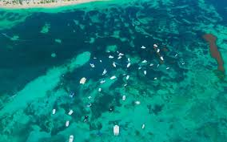
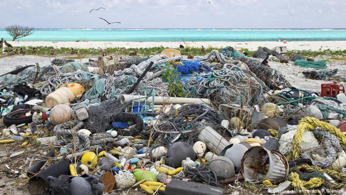
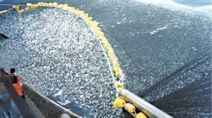
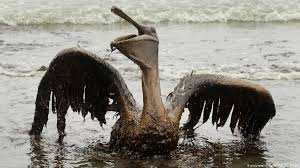
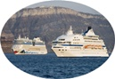
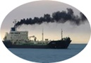
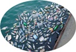

El peligro para los mares
De sobra es ya conocido, que en el mar conviven numerosas especies acuáticas, bien sean animales o plantas, las cuales conforman un amplio y variado ecosistema. Sin embargo, dicho ecosistema está sufriendo importantes pérdidas, muchas de ellas irreversibles, debido a la acción humana incontrolada.
Hechos tales como la pesca incontrolada, la acidificación del agua, la gran contaminación que sufren los mares y océanos, y el cambio climático, del cual, somos los principales responsables, está teniendo como consecuencia que numerosas especies marinas se encuentren en peligro de extinción.
Los anteriores mencionados son solo algunos ejemplos de las principales amenazas que acechan a los océanos. Las organizaciones conservacionistas llevan tiempo advirtiendo que el deterioro de las cuencas oceánicas y sus ecosistemas nos pasarán una gran factura a nivel global. ¿Estamos a tiempo de evitarlo?
La sobrepesca
ún muestra una investigación reciente , cientos de tiburones y rayas quedan enredados en desechos plásticos, generalmente útiles de pesca abandonados, en los océanos de todo el mundo. La pesca insostenible es una de las mayores amenazas de los océanos. Las flotas pesqueras han ganado en tamaño y potencia desde la década de 1950, pero debido a le explotación de los recursos del mar han de invertir cinco veces más esfuerzo para obtener el mismo volumen de capturas. En otras palabras, hay menos peces que pescar.
Prácticamente todos los océanos han sufrido los estragos de la sobrepesca. Con unas pocas excepciones notables, como las pesquerías bien gestionadas de Alaska, Islandia y Nueva Zelanda, el número de peces disponibles es hoy una fracción de lo que fue hace siglos. Los biólogos marinos difieren respecto a la magnitud del declive, pero todos coinciden en que hay demasiados barcos pesqueros para tan pocos peces.
El año pasado la Unión Europea aprobó un plan para regular la pesca en el Mediterráneo Occidental, una región cuyos stocks, según las autoridades comunitarias, sufren hasta un 80% de sobrepesca. La medida prevé reducir las capturas en un 10% este año, para finalmente disminuir una proporción de hasta un 30% en los siguientes años de aplicación. Una hoja de ruta insuficiente para muchas entidades conservacionistas, que exigen a las autoridades que se tomen se tomen medidas más drásticas, como la prohibición de la pesca de arrastre.
Contaminación petrolera
 contaminación por petróleo es uno de los problemas ambientales que mas ocurren en los últimos años, esto ocurre por el mal manejo de la industria por la poca seguridad en el manejo del crudo y en este aspecto podemos hablar de casos puntuales sobre lo que ocurre en los países de nuestro continente Americano.
Uno de los últimos grandes desastres de la industria petrolera fue el derrame de crudo en el Golfo de México siendo el peor en la historia de Estados Unidos y mucho mayor que el provocado por el accidente del petrolero Exxon Valdez en Alaska en 1989, que vertió más de 40 millones de litros, según los científicos. A pesar de los esfuerzos de BP por ocultar las consecuencias, cifras alarmantes se revelan y comienzan a dar cara a la dimensión del desastre ambiental que se ha provocado.
La contaminación por petróleo en las aguas oceánicas, provoca una película impermeable que afecta rápidamente a la fauna marina, en especial a los mamíferos y aves. Pero también impide el intercambio gaseoso y el pasaje de la luz solar, elementos que emplea el fitoplancton en la fotosíntesis.
Los animales y ecosistemas más afectados por los derrames de Petróleo en los océanos suelen ser los ecosistemas que dependen de algas y plantas. Las praderas marinas suelen verse muy afectadas. También los arrecifes de coral, porque muchas de las algas que viven en simbiosis con los corales pueden morir. Sufren, sobre todo, las especies que viven fijas en el sustrato como las esponjas -y los corales también- que no pueden huir frente a una agresión de este tipo.
Al borde de la extinción
La lista de especies marinas en peligro de extinción es muy amplia, tanto que, según datos de la Unión Internacional para la Conservación de la Naturaleza (UICN), el 13.5% de los peces marinos están amenazados de extinción. La situación de los mamíferos marinos tampoco es halagüeña: 25 de las 89 especies de cetáceos conocidas están incluidas en algunas de las categorías de riesgo de la Lista Roja que elabora la entidad internacional, la autoridad de referencia en conservación de la fauna a nivel mundial. Estas son unas de las especies en mayor peligro.
- La vaquita marina: Es un pequeño cetáceo de la familia de las marsopas en estado crítico de conservación. Los esfuerzos realizados por las autoridades locales para evitar su desaparición no han dado los resultados esperados hasta el momento y se estima que sólo quedan 18 ejemplares maduros con vida en libertad. Los intentos de cría en cautividad han fracasado y las grandes pesquerías del Golfo de California amenazan seriamente la supervivencia de este emblemático mamífero.
- Foca monje: Si hay una especie emblemática en la lucha por la conservación de la naturaleza en el mar Mediterráneo esa es la foca monje. Se trata de un mamífero marino con una población muy fragmentada que sigue reproduciéndose en la parte oriental del Mediterráneo, pero desapareció hace más de 50 años de las costas españolas. “Es una de esas especies que ya no está con nosotros y tan solo vemos aparecer algún individuo solitario muy de vez en cuando”, comenta el responsable del Programa Marino de WWF España.
- Pepinos de mar: Aunque no tiene el atractivo de los cetáceos ni de los grandes mamíferos, esta clase de equinodermos tienen un papel clave en la salud de los ecosistemas marinos. Los pepinos de mar limpian y regeneran los fondos marinos, cerrando así el ciclo energético de los ecosistemas. En los últimos años se ha producido una fuerte presión sobre las diversas especies de este tipo de organismo marino. ya que son consideradas una delicia en la mayoría de las culturas del este y el sureste asiático y se le atribuye propiedades medicinales muy destacadas.
- Tortuga laud: Es la mayor de todas las tortugas marinas, alcanzando una longitud de 2,3 metros y un peso de más de 600 kilos y actualmente está catalogada como una especie en Peligro Crítico en la Lista Roja de la IUCN. Sus principales amenazas son la pesca accidental, la pérdida de hábitat de nidificación y la extracción de huevos para el consumo que han llevado a esta especie al borde de la extinción. Sus poblaciones han disminuido de los 91.000 adultos en 1980 a los casi 3.000 de la actualidad en el Pacífico Oriental.

Otras grandes causas de contaminación
-  y turismo: El desarrollo urbanístico afecta las costas de todo el planeta. Los efectos sobre el medio ambiente de la necesidad de satisfacer nuestras demandas habitacionales tienen un importante efecto en los ecosistemas costeros, especialmente en aquellos lugares con una alta densidad de población. Además, el 80% del turismo internacional se desarrolla en zonas costeras, con playas y arrecifes de coral entre los destinos más populares.
- Transporte marítimo: Cada día, decenas de miles de barcos mercantes navegan por los océanos del mundo, transportando todo tipo de mercancías, desde alimentos y combustible hasta materiales de construcción, productos químicos o gran parte de todos esos artículos que compramos en las grandes superficies. En su trayecto, estas enormes masas flotantes siguen la ruta de las denominadas autopistas marítimas, cuya estela de contaminación puede apreciarse incluso a través del espacio.
- Residuos Sólidos: Bolsas de plástico, globos, botellas de vidrio, zapatos, material de embalaje… todo lo que no se elimina o se recicla acaba en el mar, convertido en el gran basurero de la humanidad. De entre toda esa basura, preocupa especialmente la compuesta por plástico, ya que se descompone muy lentamente, y amenaza seriamente a los ecosistemas marinos y contaminando los océanos desde las costas hasta las profundidades
Maracaibo Venezuela